מדריך בעברית · מעודכן לפי המקורות ב-4.11.2026
רישיון הטיס שלכם ל-Copilot
יש לכם עוזר AI מאובטח שכבר מחובר לעבודה שלכם. בעשרה שיעורי טיסה קצרים תלמדו להשתמש בו ביומיום, ב-Outlook וב-Teams, ואז לבנות סוכן משלכם שעובד בשביל כל הצוות. ממלאים את יומן הטיסה, והמדריך מתאים את עצמו לרישיון ולמטרה שלכם. כל שיעור נגמר בחידה קטנה ובזוג כנפיים.
תוכנית הטיסה
כל המסלול לוקח בערך שעה, ואפשר לנחות בכל שיעור ולהמשיך מחר. הדפדפן זוכר איפה עצרתם. בחרתם מטרה ביומן? השיעורים שמתאימים לה מסומנים.
- 01בדיקה לפני המראה: מה זה, ואיזה רישיון יש לימומלץ לכם4 דק׳ממתין
- 02תא הטייס: סיור בממשקמומלץ לכם6 דק׳ממתין
- 03קשר עם המגדל: שיחה קולית ושיתוף מסךמומלץ לכם3 דק׳ממתין
- 04דואר נכנס: Copilot ב-Outlookמומלץ לכם4 דק׳ממתין
- 05תחקיר אחרי טיסה: סיכומי פגישות ב-Teamsמומלץ לכם5 דק׳ממתין
- 06הטייס האוטומטי: בונים סוכן ראשוןמומלץ לכם8 דק׳ממתין
- 07מפות ניווט: ידע ויכולות לסוכןמומלץ לכם6 דק׳ממתין
- 08ספר הנהלים: סקיליםמומלץ לכם6 דק׳ממתין
- 09טיסה משותפת: שיתוף, וסוכנים מוכניםמומלץ לכם6 דק׳ממתין
- 10טיסה בינלאומית: Copilot Studioמומלץ לכם6 דק׳ממתין
בדיקה לפני המראה
ארבע דקות על מה זה בכלל, ועל השאלה הכי חשובה במדריך: איזה רישיון יש לכם.
טייס משנה, לא טייס אוטומטי
Copilot הוא עוזר הבינה המלאכותית של מיקרוסופט לעבודה. הוא צ׳אט, ממש כמו ChatGPT, Claude או Gemini, אבל עם שלושה יתרונות שקשה להתעלם מהם בארגון:
- הוא כבר אצלכם. אם בארגון יש OneDrive, SharePoint, Outlook או Teams, אתם בארגון מיקרוסופטי, וסביר שהצ׳אט כבר פתוח לכם בלי עלות נוספת.
- הוא מאובטח. אתם מחוברים עם חשבון העבודה, והמידע נשאר בתוך הסביבה של הארגון. לכן מותר (וכדאי) להשתמש בו בעבודה.
- הוא יכול להתחבר לידע הארגוני. עם הרישיון בתשלום הוא מכיר את המיילים, הקבצים, הפגישות והצ׳אטים שלכם. בשיעור 7 נראה בדיוק מה זה נותן.
בהגינות: יש ביקורות על כך שהתשובות שלו לפעמים חלשות מכלים אחרים. אבל הוא נגיש, מאובטח ומחובר, וזה מה שמכריע בעבודה. וכמו שאייל מרקוס אומר: הוא לא יהיה טיפש יותר ממה שהוא היום.
איפה פותחים אותו
- בדפדפן נכנסים ל-microsoft365.com עם חשבון העבודה, ובוחרים Copilot בסרגל הצד.
- בתוך האפליקציות כפתור Copilot מופיע גם ב-Outlook, ב-Teams, ב-Word, ב-Excel וב-PowerPoint. זה אותו Copilot, עם ההקשר של המסמך שפתוח לפניכם.
- שימו לב לחשבון חשבון Microsoft פרטי (למשל Outlook.com) הוא Copilot אחר, לצרכנים. כל מה שבמדריך הזה עובד רק עם חשבון עבודה.
שני רישיונות. בודקים איזה יש לכם.
| Copilot Chat חינמי | Microsoft 365 Copilot בתשלום | |
|---|---|---|
| מה זה | מגיע עם רישיון Microsoft 365 של העבודה | תוספת שהארגון קונה ומקצה לכם |
| על מה הוא עונה | על הידע הכללי שלו, על האינטרנט ועל קבצים שאתם מעלים | כל זה, ובנוסף על המיילים, הקבצים, הפגישות והצ׳אטים שלכם (מיקרוסופט קוראת לזה Work IQ) |
| סוכנים | אפשר לבנות, עם ידע מאתרי אינטרנט בלבד | אפשר לבנות על המידע הארגוני, ויש גם את Researcher ו-Analyst |
- מסתכלים למעלה רואים מתג עם שתי לשוניות, Work ו-Web? יש לכם את הרישיון בתשלום. אין שם כלום? אתם בגרסה החינמית.
- מסתכלים למטה מתחת לתיבת הכתיבה מופיע שם הרישיון: Copilot Chat (חינמי, ולרוב עם כפתור שדרוג לידו) או Microsoft 365 Copilot.
- מעדכנים את יומן הטיסה חוזרים למעלה ובוחרים את הרישיון שלכם. מעכשיו המדריך יציג רק מה שרלוונטי לכם.
בראש המסך של Copilot מופיע מתג Work | Web. מה זה אומר?
תא הטייס
סיור בכפתורים הגלויים ובאלה שאף אחד לא מספר לכם עליהם. לחצו על המספרים בסימולטור.
סימולטור: לחצו על כל מספר
Weekly report draft
Q3 budget questions
Hi, how can I help?
כל מספר מסביר כפתור אחד: מה הוא עושה, ומתי כדאי להשתמש בו.
גיליתם 0 מתוך 11
שלושה דברים שמגדירים ביום הראשון
- הוראות קבועות שלוש הנקודות ··· ואז Settings ואז Personalization. כאן כותבים פעם אחת איך אתם רוצים שיענה לכם, והוא יזכור את זה בכל שיחה. מותר לכתוב בעברית:
הוראות לדוגמה, להעתקה ולהתאמה
ענה תמיד בעברית, אלא אם ביקשתי אחרת. היה תכליתי. בלי פתיחות מנומסות מדי ובלי חזרה על השאלה שלי. אם חסר לך מידע כדי לענות טוב, שאל אותי לפני שאתה עונה. אל תשתמש בקווי הפרדה ובאימוג׳ים. אני [התפקיד שלכם] ב[הארגון], ואני עובד בעיקר על [נושאים].
- זיכרון באותו מסך יש גם פרופיל וזיכרונות: מה Copilot זוכר עליכם. עברו על הרשימה ומחקו מה שלא נכון או לא רלוונטי. אצל אייל, למשל, הוא זכר שהוא עובד בחברה שבה בסך הכול העביר סדנה.
- פרומפט שרץ לבד מתחת לתשובה טובה מחפשים Schedule this prompt וקובעים מתי הוא ירוץ שוב. ככה תשובה חד-פעמית הופכת לשגרה:
פרומפט לתזמון, למשל כל יום ראשון ב-8:00
עבור על המיילים שקיבלתי בשבוע האחרון ותן לי רשימה של מה שדורש ממני תגובה או החלטה, לפי סדר דחיפות. ליד כל פריט: ממי, מה מבקשים, ועד מתי.
טריק התיוג
במקום להעתיק ולהדביק, מקלידים / בתיבת הכתיבה (או לוחצים על +) ובוחרים קובץ, מייל, פגישה או אדם. ואז פשוט כותבים: ״סכם את המייל הזה בשלוש שורות ותציע תשובה.״ לא צריך לפתוח את המייל בכלל.תיוג מיילים ופגישות: בתשלום
רוצים ש-Copilot יענה תמיד בעברית ובקצרה, בכל שיחה. מה הכי נכון?
קשר עם המגדל
מדברים במקום להקליד, ומראים לו את המסך כדי לקבל עזרה בזמן אמת. במחשב או בטלפון.
למה לדבר עם Copilot?
מספרים לו על בעיה תוך כדי הליכה, והוא שואל, מסכם ומציע כיוונים.
משתפים חלון, ומקבלים הסבר על גרף, טופס, הגדרה או הודעת שגיאה, בלי לצלם ולהעלות.
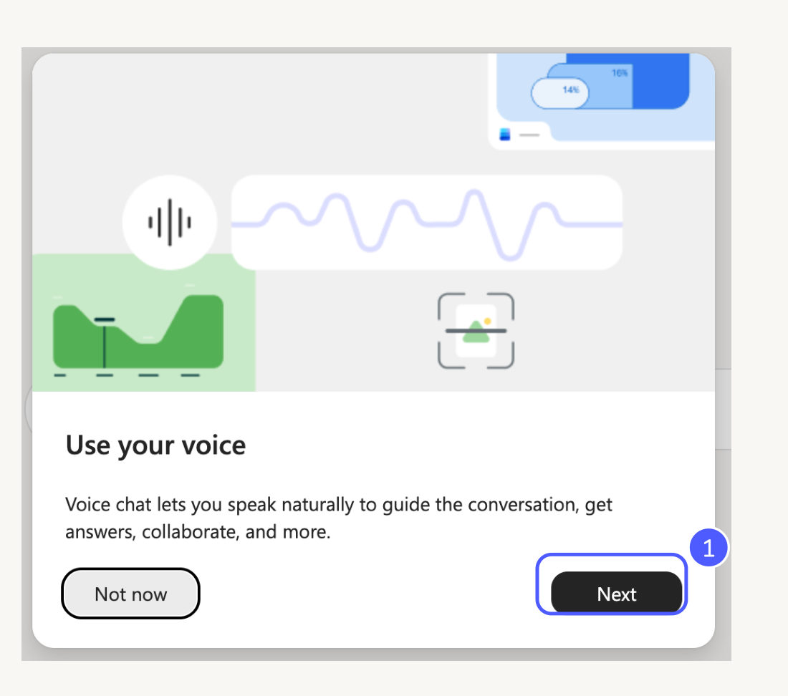
- בפעם הראשונה מופיע מסך שמסביר על שיחה טבעית עם Copilot. להמשך לוחצים Next.
- הכפתור Not now דוחה את ההיכרות לפעם אחרת.
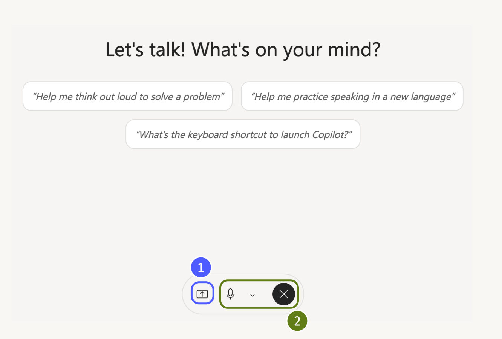
- 1לשיתוף מסך לוחצים על סמל השיתוף בתחתית מסך השיחה.
- 2לצידו המיקרופון (להשתקה) וכפתור X לסיום השיחה.
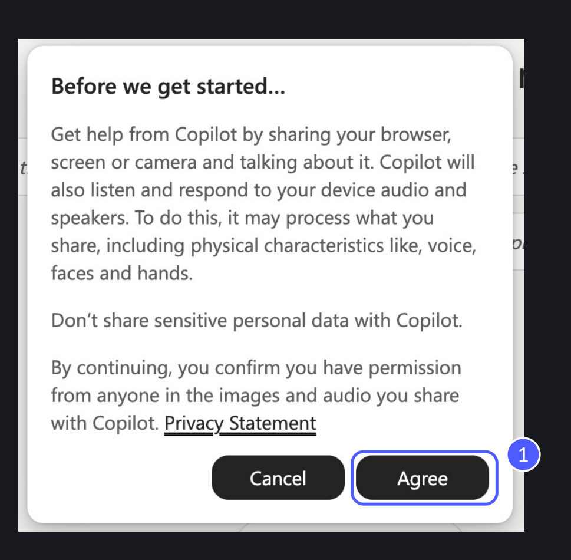
- קוראים את ההודעה על עיבוד התוכן והשמע שמשתפים.
- לא משתפים מידע אישי רגיש, ומוודאים שיש רשות מאנשים שמופיעים בתמונה או נשמעים בשיחה.
- 1מסכימים? לוחצים Agree. מתחרטים? Cancel.
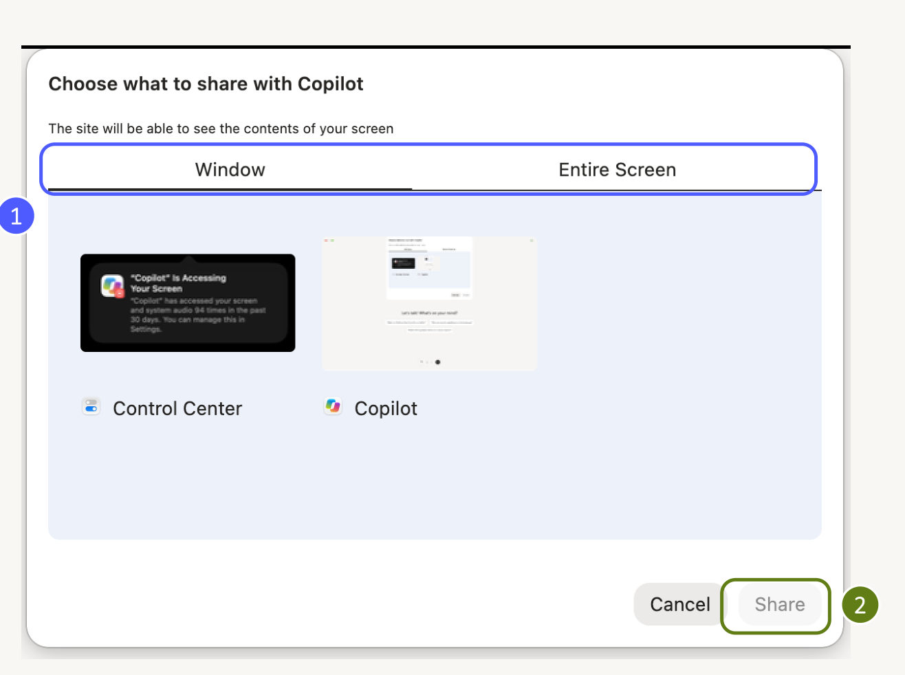
- 1Window לחלון אחד, או Entire Screen למסך כולו. ההמלצה שלי: חלון אחד, כדי שלא ייחשף בטעות משהו אחר.
- 2בוחרים את הפריט, ורק אז לוחצים Share. כל עוד לא בחרתם, הכפתור אפור.
צילומי המסך מתוך הוובינר ״חידושים ב-Copilot בעבודה״, בהנחיית אליהו ביטון.
״תעזור לי לחשוב בקול רם על איך להציג את הפרויקט שלי להנהלה.״ ״אני משתף לך את האקסל. מה הנוסחה בעמודה F עושה, ולמה יוצאת שגיאה?״ ״תתרגל איתי שיחת משוב קשה לעובד. אתה העובד, ואני המנהל.״
פתחתם את חלון השיתוף, והכפתור Share אפור. למה?
דואר נכנס
מלמדים את Copilot ב-Outlook לכתוב טיוטות בסגנון שלכם, ולסדר לכם את הדואר הנכנס לפי חשיבות.
שתי הגדרות שונות, שמתבלבלים ביניהן
הנחיות לניסוח טיוטות: טון, אורך, ברכת פתיחה וחתימה.
תעדוף של הדואר הנכנס, תקצירים, וכללים לעדיפות גבוהה או נמוכה.
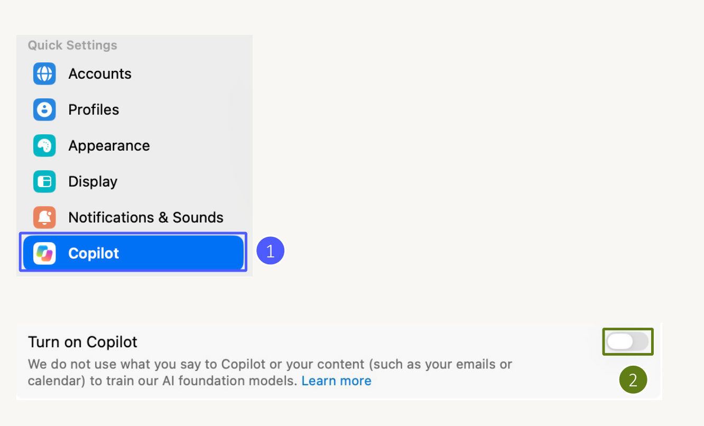
- 1בהגדרות של Outlook בוחרים Copilot בתפריט הצד.
- 2מפעילים את המתג Turn on Copilot. בצילום הוא עדיין כבוי.
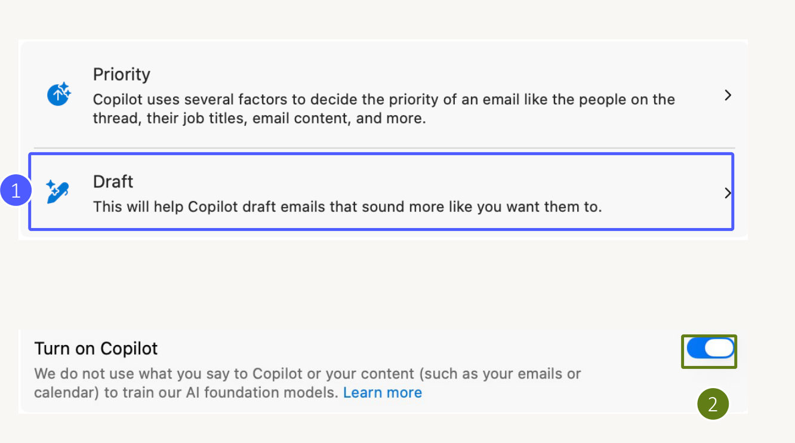
- 1לוחצים על Draft כדי להתאים את סגנון המיילים ש-Copilot מנסח.
- 2המתג כחול, כלומר פעיל. Priority הוא מסלול נפרד, ונגיע אליו בצעד 4.
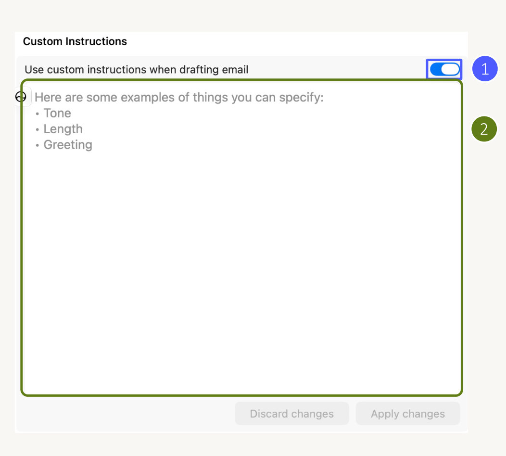
- 1מוודאים שהמתג Use custom instructions when drafting email פעיל.
- 2בשדה כותבים את הסגנון, האורך וברכת הפתיחה (ההצעה שלי מופיעה מתחת). בסוף לוחצים Apply changes.
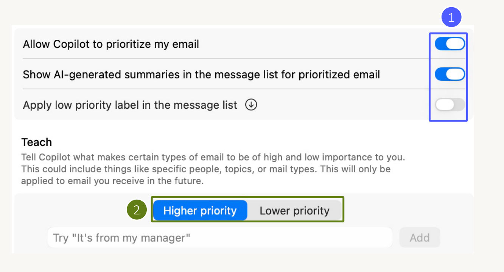
- 1כאן מפעילים תעדוף הודעות והצגת תקצירים. בצילום, הסימון של עדיפות נמוכה כבוי.
- 2באזור Teach בוחרים עדיפות גבוהה או נמוכה ומוסיפים כלל, למשל ״כל מייל מהמנכ״ל בעדיפות גבוהה״. הכללים חלים על הודעות עתידיות.
צילומי המסך מתוך הוובינר ״חידושים ב-Copilot בעבודה״, בהנחיית אליהו ביטון.
כתוב בעברית, בקצרה ובטון מקצועי ונעים. פתח ב״היי [שם הנמען],״ ובלי ״מקווה שאתה בטוב״. עד חמש שורות. אם צריך יותר, חלק לנקודות. אם יש בקשה, כתוב אותה במשפט הראשון, עם תאריך יעד אם ידוע. סיים ב״תודה, [השם שלכם]״.
רוצים שכל טיוטה ש-Copilot מנסח תהיה קצרה ובעברית. לאן הולכים?
תחקיר אחרי טיסה
אחרי פגישה ב-Teams: סיכום, משימות, סיכום לפי דובר ותבנית סיכום משלכם. ואז בודקים מול התמלול.
חמש לשוניות, חמש דרכים לזכור פגישה
| לשונית | מה תמצאו שם |
|---|---|
| Notes | הערות שנכתבו בפגישה |
| AI summary | סיכום לפי נושאים (Meeting notes) ומשימות להמשך (Follow-up tasks) |
| Custom summary | תבניות: דוח למנהלים, סיכום לפי דובר, או תבנית שאתם מגדירים |
| Mentions | הפעמים שהזכירו אתכם |
| Transcript | התמלול המלא, עם חיפוש והורדה |
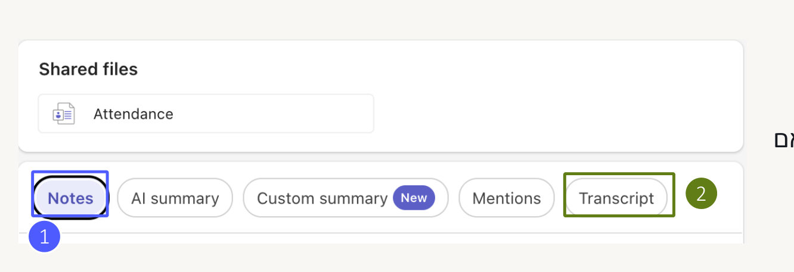
- 1בצילום פתוחה הלשונית Notes. לצידה סיכום AI וסיכום מותאם אישית.
- 2הלשונית Transcript עוברת לתמלול של הפגישה.
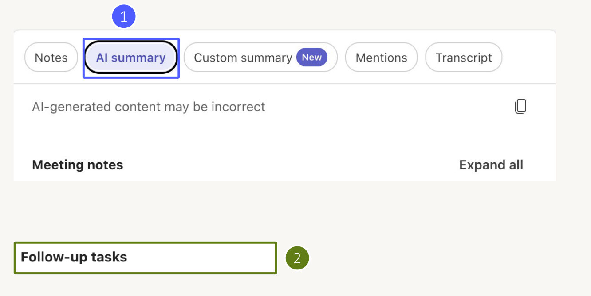
- 1בוחרים AI summary. באזור Meeting notes יש סיכום לפי נושאים.
- 2באזור Follow-up tasks עוברים על המשימות שהמערכת זיהתה.
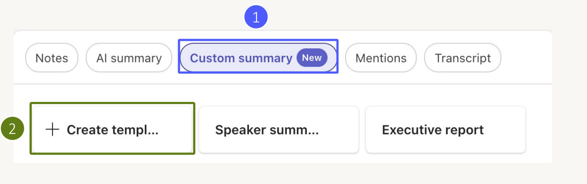
- 1פותחים את Custom summary.
- 2ליצירת תבנית משלכם לוחצים על האריח עם הפלוס. יש גם תבנית מוכנה: Executive report, דוח למנהלים.
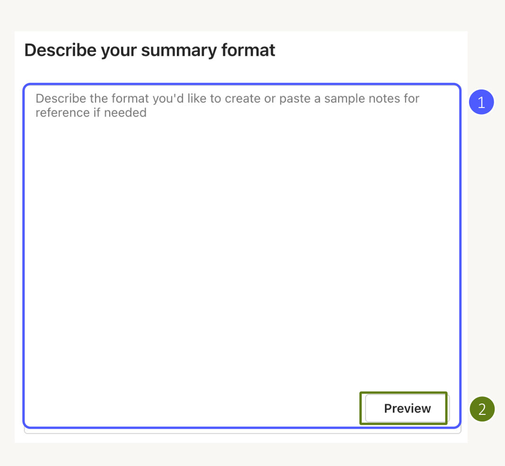
- 1כותבים במילים איך הסיכום צריך להיראות (ההצעה שלי מתחת לצילומים). אפשר גם להדביק סיכום לדוגמה.
- 2לוחצים Preview ובודקים את התוצאה. אם היא טובה: Save and Apply.
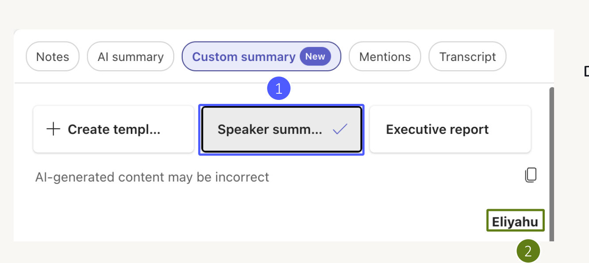
- 1בלשונית Custom summary בוחרים את האריח של הסיכום לפי דובר. בממשק השם שלו מקוצר: Speaker summ…
- 2מתחת לאריחים מופיע שם הדובר שהסיכום מתייחס אליו.
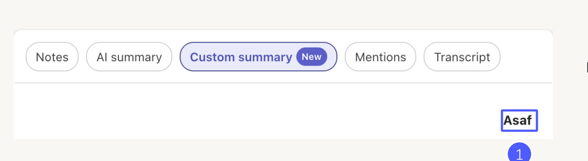
- 1גוללים וקוראים את הסעיפים שמתחת לכל שם.
- בדיקה מומלצת: מוודאים שהדברים מיוחסים לדובר הנכון, ומשווים לתמלול כשצריך.
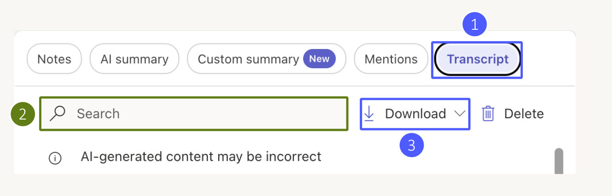
- 1בוחרים בלשונית Transcript.
- 2מקלידים מילה או ביטוי בשדה Search.
- 3תפריט Download מציג את אפשרויות ההורדה.
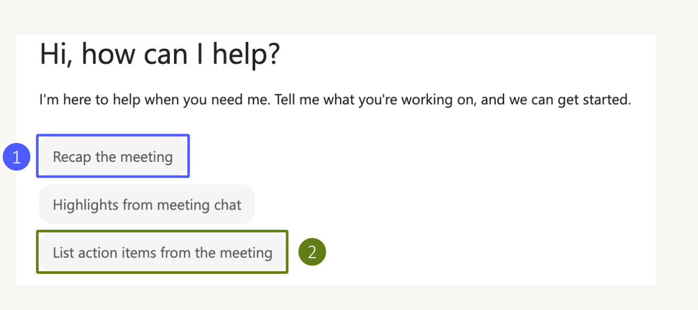
- 1Recap the meeting מבקש סיכום של הפגישה.
- 2List action items from the meeting מבקש רשימת פעולות להמשך. יש גם הצעה לקבל את עיקרי הצ׳אט של הפגישה.
צילומי המסך מתוך הוובינר ״חידושים ב-Copilot בעבודה״, בהנחיית אליהו ביטון.
סיכום קצר בעברית. שלוש שורות של עיקר הדברים. אחר כך: ההחלטות שהתקבלו, כל החלטה בשורה. בסוף: טבלת משימות עם עמודות למשימה, לאחראי ולתאריך היעד. אם לא נקבע אחראי או תאריך, כתוב ״לא נקבע״.
מה הוחלט לגבי [נושא], ומי התנגד? אילו שאלות נשארו פתוחות? נסח מייל המשך לכל המשתתפים עם ההחלטות והמשימות.
בסיכום כתוב שדנה התחייבה להגיש דוח עד יום חמישי. איך הכי מהר לבדוק שזה באמת נאמר?
הטייס האוטומטי
מתי פרומפט כבר לא מספיק, ואיך בונים סוכן ראשון ב-Agent Builder בעשר דקות, בלי שורת קוד.
פרומפט או סוכן?
כשבונים סוכן, לא מוסיפים ל-Copilot מוח חדש. ממקדים אותו: אומרים לו מי הוא, איך לענות ועל איזה ידע לסמוך. כדאי לבנות סוכן כשעונים ״כן״ לפחות על אחת מהשאלות האלה:
- זה חוזר? משימה או שאלה שאתם (או הצוות) עושים שוב ושוב.
- יש דרך מסוימת? אתם יודעים בדיוק איך התשובה צריכה להיראות, ונמאס לכם לכתוב את זה בכל פעם.
- יש ידע מסוים? התשובות צריכות להגיע ממקורות מסוימים, ולא מהידע הכללי של ה-AI.
ליסה קרוסבי מציעה לחשוב על זה כמו על צוות: כל סוכן הוא מומחה קטן לנושא אחד. אפשר שיהיו לכם עשרות, והם עובדים הכי טוב כשהם ממוקדים.
האנטומיה של סוכן
אייקון מוכן, תמונה שמעלים, או תמונה ש-AI מייצר מהתיאור.
משפט אחד: מה המטרה של הסוכן. כמו שורת הפתיחה בתיאור תפקיד.
הלב: תפקיד, טון, כללים ומה עושים כשאין תשובה. עד 8,000 תווים.
יכולות קבועות שחוזרות על עצמן, כמו ״הכן מייל עדכון שבועי״. בשיעור 8.
על מה הסוכן מתבסס: אתרים, ובתשלום גם קבצים, מיילים ופגישות. בשיעור 7.
האם מותר לו ליצור מסמכים, גרפים ותמונות.
עד שישה כפתורי פתיחה שמופיעים למשתמש.
תשובה מהירה או חשיבה מעמיקה. ברירת המחדל, Auto, מתאימה כמעט תמיד.
בונים, צעד אחר צעד
כך זה נראה ב-Agent Builder בממשק החדש של סתיו 2026:
- פותחים את הבונה בסרגל השמאלי של Copilot מרחפים מעל Agents ובוחרים New agent. לחיצה על Agents עצמו פותחת את חנות הסוכנים.
- מתארים במילים מה הסוכן עושה אפשר להתחיל מתבנית מוכנה (למשל תדריך למנהלים, או ״תכנן לי את היום״), אבל הכי פשוט להדביק תיאור:
תיאור לדוגמה
אתה סוכן קליטה לעובדים חדשים. תעזור להם עם שאלות על תהליכים בארגון, משימות נפוצות ושירותים פנימיים. תענה רק מתוך המקורות שצירפתי, בעברית ובמשפטים קצרים. אם התשובה לא מופיעה במקורות, תגיד את זה ותפנה למשאבי אנוש.
- מצרפים מקורות מדביקים כתובת של אתר SharePoint, או לוחצים + ואז Add content ובוחרים קבצים, פגישות, צ׳אטים וערוצים. גם
/פותח את אותו חלון.ברישיון החינמי מצרפים כתובות של אתרי אינטרנט. קבצים מ-SharePoint לא יישמרו כמקור (בשיעור 7 נראה למה). - עונים על שאלות ההבהרה הבונה שואל, למשל: ״לעבוד לפי צ׳קליסט קבוע, או לענות בגמישות?״ עונים במשפט אחד.
- קוראים את ההוראות שנכתבו הבונה נותן שם, מטרה וכללים. בקשו ממנו: ״הצע שיפורים להוראות.״ אצל מייק טולפסן הוא הציע כלל של סדר עדיפות בין מקורות ופורמט קבוע לתשובה.
- מסדרים את הפרומפטים המוצעים מכבים את מה שלא מתאים, ומוסיפים כפתור משלכם.
- מוסיפים אייקון Edit icon: לייצר תמונה, לבחור אייקון או להעלות קובץ. קובץ שמעלים צריך להיות קטן, בערך 192 על 192 פיקסלים ועד 1MB.
- בודקים בחלון התצוגה המקדימה שואלים את השאלות שעובדים באמת ישאלו, ולוחצים על המקורות כדי לוודא שהתשובה הגיעה מהמסמך הנכון.
- לוחצים Create הסוכן נשמר. בהתחלה הוא פרטי ורק אתם רואים אותו. בשיעור 9 נשתף אותו.
מחולל ההוראות
רוצים לכתוב את ההוראות לבד? ממלאים, מעתיקים ומדביקים בשדה ההוראות. גם על הוראות שהבונה כתב כדאי לעבור עם הרשימה הזאת.
ארבעה פרומפטים לסוכן הראשון
מיקרוסופט ממליצה להגיד ל-Copilot מה כן לעשות, ולנסח הוראות בצורת ״אם… אז…״. כך זה נראה בעברית, לפי המדריך של אייל מרקוס. אחרי התיאור הראשון, מוסיפים כל הוראה בהודעה נפרדת לבונה:
תבנה סוכן שעונה לעובדים חדשים על שאלות על נוהל הקליטה, רק מתוך המסמכים שאצרף, בעברית ובמשפטים קצרים
תוסיף הוראה: אם התשובה לא מופיעה במסמכים, תגיד שאין לך מידע ותפנה את העובד לצוות משאבי אנוש
תוסיף הוראה: אם העובד שואל על שכר או על תנאים אישיים, תפנה אותו למנהל הישיר שלו
תכתוב לי עשר שאלות שעובד חדש באמת ישאל על נוהל הקליטה, כולל שלוש שאין להן תשובה במסמכים
אחרי היצירה: משפרים תוך כדי טיסה
- הצמדה מרחפים מעל הסוכן ברשימה ובוחרים Pin, כדי שיהיה תמיד למעלה.
- קריאה מכל צ׳אט בצ׳אט רגיל מקלידים
@ואת שם הסוכן, ממש כמו שמתייגים עמית. - שיפור שלוש נקודות ליד הסוכן ואז Edit. משתמשים בו כמה ימים, ומתקנים מה שמעצבן. אף סוכן לא יוצא מושלם בפעם הראשונה.
באיזה מקרה הכי שווה לבנות סוכן, ולא להסתפק בפרומפט?
מפות ניווט
על מה הסוכן נשען כשהוא עונה, מה מותר לו לייצר, ואיפה עובר הקו בין החינמי לבתשלום.
״מעוגן״: המילה שכדאי להכיר
כשסוכן עונה רק מתוך מקורות מסוימים, אומרים שהוא מעוגן בהם (grounded). זה ההבדל בין ״עצה כללית מהאינטרנט״ לבין ״מה כתוב אצלנו בנוהל״. באזור Knowledge של הסוכן קובעים את המקורות.
מה אפשר ברישיון החינמי חינמי
- אתר מסוים מוסיפים כתובת, והסוכן עונה מתוכה ומכל מה שמתחתיה. מתאים לבלוג מקצועי, לאתר רגולציה, למילון מונחים של הארגון.
- כל האינטרנט מדליקים חיפוש ברשת, והסוכן מחפש מקורות בעצמו ומצרף קישורים.
- רק מהמקורות שלי המתג Only use specified sources מונע ממנו לענות מהידע הכללי.
מה נפתח ברישיון בתשלום בתשלום
חוץ מאתרים, אפשר לעגן את הסוכן גם במידע של העבודה:
- קבצים הקבצים האחרונים מופיעים ראשונים. כדי להוסיף תיקייה שלמה לוחצים על סמל הענן, ומהמחשב מעלים עם החץ.
- אתרי SharePoint שימו לב: בחירה ב-Sites מביאה את התוכן של דפי האתר, לא את המסמכים. בשביל המסמכים בוחרים SharePoint files and folders.
- צ׳אטים, פגישות ומיילים למשל צ׳אט קבוצתי ארוך שיש בו המון תשובות לשאלות שחוזרות.
- אנשים מידע מהמבנה הארגוני ומהפרופילים: מי מדווח למי, ומי עובד עם מי.
- מערכות נוספות מערכות כמו Confluence, אם מנהל ה-IT חיבר אותן.
אתרים: שני כללים שחוסכים תסכול
- עד שתי רמות עומק הכתובת שמוסיפים יכולה להיות לכל היותר שתי רמות מתחת לדומיין.
site.com/blogעובד, אבלlearn.microsoft.com/en-us/copilot/microsoft-365ייתן שגיאה. הפתרון: לקצר את הכתובת. הסוכן עדיין יקרא את כל מה שמתחתיה. - רק מה שמנוע חיפוש רואה הסוכן קורא את האתר כמו מנוע חיפוש. טבלאות שנבנות ב-JavaScript, קוראי ספרים מוטמעים ותוכן שמאחורי התחברות פשוט לא קיימים מבחינתו.
יכולות: מה מותר לסוכן לייצר
מתחת לאזור הידע יש שני מתגים, וגם הם עובדים בחינמי:
הסוכן כותב קוד מאחורי הקלעים, ומחזיר קובץ אמיתי, למשל מחשבון אקסל או גרף. לא צריך לדעת לתכנת.
כבוי? הסוכן פשוט לא ייצר תמונות, גם אם יבקשו ממנו. ככה שומרים על סוכן ממוקד.
הוספתם את learn.microsoft.com/en-us/copilot/microsoft-365 וקיבלתם שגיאה. למה?
ספר הנהלים
סקילים הם ההכשרה המקצועית של הסוכן. כותבים פעם אחת, והוא יודע לעשות את זה נכון בכל פעם.
העובד המוכשר ביום הראשון
תארו לעצמכם עובד חכם מאוד ביום הראשון שלו. הוא מסוגל כמעט להכול, אבל לא מכיר את הנהלים, את השפה המקצועית ואת התהליכים שלכם. זה בדיוק סוכן AI כללי. סקיל הוא חבילה של הוראות, הקשר וקבצי עזר שממוקדת במשימה אחת, והסוכן טוען אותה לבד כשהמשימה רלוונטית.
מנהל את כל התהליך לקראת מטרה, מקבל החלטות, מתאם כלים ומחזיק את ההקשר של כל השיחה.
מומחה בדבר אחד. נטען כשצריך, מבצע ויוצא. אפשר לשתף אותו בין סוכנים שונים.
למה לא פשוט לבנות עוד סוכנים? מהנדסים ב-Anthropic הציגו גישה שמסוכמת במשפט ״תפסיקו לבנות סוכנים, תתחילו לבנות סקילים״. סוכן אחד עם ספריית סקילים חוסך תיאום בין סוכנים, חוסך טוקנים ושומר את ההקשר של השיחה במלואו.
שלוש שכבות, נטענות בהדרגה
שם, ותיאור של מתי להפעיל את הסקיל.
הצעדים, הכללים, האילוצים ופורמט הפלט.
קבצי עזר, סקריפטים ודוגמאות.
לשיטה הזאת קוראים Progressive Disclosure: הסוכן רואה רק את השמות והתיאורים של כל הסקילים, ופותח את הפרטים רק כשצריך. לכן אפשר להחזיק הרבה סקילים בלי להעמיס עליו.
סקילים ב-Agent Builder
- מבקשים הצעות בבונה כותבים: ״הצע כמה סקילים לסוכן הזה.״ אצל מייק טולפסן הוא הציע תוכנית קליטה לפי תפקיד, טיפול בבקשות גישה למערכות, והכנה לשיחת מנהל.
- מאשרים ״צור את שלושת הסקילים.״ הם מופיעים בצד, וכל אחד הוא פשוט הוראות: מטרה, מתי משתמשים, צעדים ופורמט פלט. אפשר לפתוח ולערוך.
- הופכים תבנית לסקיל יש לכם מסמך Word שאתם תמיד ממלאים באותה צורה? כתבו: ״צור סקיל של מייל עדכון שבועי, לפי התבנית הזאת״, ותייגו את המסמך עם
/. - מעלים סקיל קיים כבר יש לכם קובץ
.mdעם סקיל? מעלים אותו ישירות.
מה יש בתוך סקיל
כל סקיל מתחיל בקובץ אחד, SKILL.md: כותרת קצרה עם שם ותיאור, ואחריה הוראות בשפה טבעית. כשצריך, מוסיפים תיקיות עזר:
weekly-status/ ├── SKILL.md # חובה: שם, תיאור והוראות ├── references/ # מסמכי עזר: נהלים, תקנים, רשימות תיוג ├── scripts/ # סקריפטים לפעולות שחוזרות └── examples/ # קלט ופלט לדוגמה: ככה נראית תוצאה טובה
description. השקיעו בו: כתבו מתי להשתמש בסקיל ובאילו מילים המשתמש יבקש אותו.חמישה צעדים לסקיל ראשון
- משימה אחת ספציפית. לא ״עזרה במיילים״, אלא ״מייל עדכון שבועי״.
- תיקייה בשם הסקיל.
- SKILL.md עם שם, תיאור והוראות בשפה טבעית. המחולל למעלה עושה את זה בשבילכם.
- קבצי עזר רק אם צריך: תבנית, דוגמה טובה, רשימת תיוג.
- בדיקה שואלים את הסוכן בכמה ניסוחים שונים, ומוודאים שהסקיל מופעל רק כשצריך.
לפי מה הסוכן מחליט שהגיע הזמן להפעיל סקיל?
טיסה משותפת
משתפים את הסוכן עם הצוות, עוקבים אחרי השימוש, ומכירים את הסוכנים שמיקרוסופט כבר בנתה בשבילכם.
משתפים סוכן
- Share אחרי היצירה הסוכן פרטי. לוחצים Share ובוחרים אנשים מסוימים, קבוצה, או כל הארגון (תלוי במה שהארגון מאפשר).
- הרשאה לכל אדם בוחרים Can chat (רק להשתמש) או Can edit (גם לערוך). ברוב המקרים מספיק Can chat.
- קישור אפשר גם להעתיק קישור ולשלוח. מי שמקבל לוחץ Add, והסוכן מצטרף לרשימה שלו.
לכל הארגון, ובמעקב
- קטלוג הארגון שלוש נקודות ואז Submit to your org catalog. הסוכן עובר לאישור מנהל, והמנהל מפרסם אותו מתוך Microsoft 365 admin center, באזור Agents.
- מעקב Monitor מציג כמה שיחות היו, כמה משתמשים, כמה הודעות ובאילו מקורות ידע השתמשו, ב-7, 14 או 30 הימים האחרונים. ככה יודעים אם הסוכן באמת עוזר.
- בכל מקום הסוכנים שלכם מופיעים גם בחלונית Copilot בתוך Word, Excel ו-PowerPoint, עם ההקשר של המסמך הפתוח.
סוכנים מוכנים מחנות הסוכנים
בסרגל השמאלי לוחצים על Agents (או All agents) ומגיעים לחנות. מוסיפים סוכן עם Add.
| סוכן | מה הוא עושה | רישיון |
|---|---|---|
| Prompt Coach | משפר פרומפטים לפי מסגרת מסודרת. אחד המועדפים של ליסה קרוסבי | חינמי |
| Idea Coach · Writing Coach | סיעור מוחות ושיפור כתיבה | חינמי |
| Researcher | מחקר עמוק ברשת ובמידע של העבודה, עם מקורות ודוח מסודר | בתשלום |
| Analyst | ניתוח נתונים, מגמות וחריגים, כולל גרפים. קורא גם קבצי PDF | בתשלום |
Researcher ו-Analyst בפעולה בתשלום
Researcher חושב לפני שהוא עונה ובודק כמה כיוונים, ולכן לוקח לו כמה דקות. תנו לו בעיה לפתור, לא שאלה. הוא ישאל שאלות הבהרה, ובסוף תוכלו לפתוח את הדוח ב-Word או לערוך אותו ב-Pages יחד עם עמיתים.
אני מכין הצגה להנהלה על [נושא]. הכן לי תדריך קצר שיעזור לי להבין כל מה שצריך: רקע, יתרונות, סיכונים, ומה עשו ארגונים דומים בישראל. צטט מקורות אמינים.
Analyst מתאים לגיליונות גדולים ולדוחות. ההקשר הוא חצי מהעבודה: הסבירו לו מה בקבצים ואיך הנתונים מסודרים.
הקבצים מציגים [מה הנתונים] לשנים [טווח]. כל שורה היא [יחידה], והעמודות הן [שמות העמודות]. אילו מגמות או חריגים אתה מזהה? אחר כך: צור גרף של המגמה העיקרית, וכתוב לו פסקת פרשנות שאפשר להציג להנהלה.
סוכנים שכבר מחכים ב-SharePoint וב-OneDrive בתשלום
- ספרייה שלמה בספריית מסמכים ב-SharePoint לוחצים Open agents, ושואלים שאלות על כל המסמכים שבה. בלי לבנות כלום.
- מסמך אחד מסמנים מסמך, ואז AI actions ואז Create an agent. מקבלים סוכן שכבר מעוגן במסמך הזה. ב-OneDrive זה עובד באותה צורה.
שיתפתם עם עמית סוכן שמעוגן בתיקייה שלכם, והוא לא מקבל ממנו תשובות מהתיקייה. מה הסיבה הסבירה?
טיסה בינלאומית
Copilot Studio הוא הכלי הכבד במשפחה. מתי באמת צריך אותו, כמה הוא עולה, ומה עובד בעברית.
שני כלים, שני קהלים
לעובדים מהשורה, בתוך הצ׳אט של Copilot, בשפה טבעית. סוכן בשבילכם או בשביל צוות קטן. מנוהל ב-Microsoft 365 admin center.
ליוצרים (makers) ולמפתחים. סוכן למחלקה, לארגון או ללקוחות, עם תהליכים וחיבורים למערכות. מנוהל ב-Power Platform admin center.
- הסוכן ישרת מחלקה שלמה, את כל הארגון, או לקוחות מבחוץ?
- יש תהליך של כמה שלבים ברצף (למשל: לקבל טופס, לבדוק, לאשר, לעדכן)?
- צריך לחבר אותו למערכת עסקית (CRM, מערכת שכר, מערכת קריאות)?
- הוא צריך להתחיל לעבוד לבד, לפי לוח זמנים או כשקורה משהו?
עוברים מ-Agent Builder לסטודיו
- מעתיקים בסוכן שבניתם: שלוש נקודות ואז Copy to Copilot Studio, ואז Get started.
- יוצרים ההוראות, הידע וכל ההגדרות עוברים. לוחצים Create.
- זוכרים שזה עותק ההעתקה היא חד-פעמית. מעכשיו יש שני סוכנים נפרדים, ושינוי באחד לא משפיע על השני.
כמה זה עולה
נכון לספטמבר 2026, לפי המדריך של אייל מרקוס שמתבסס על המחירון של מיקרוסופט. המטבע הוא Copilot Credits.
- עם רישיון Microsoft 365 Copilot משתמש עם רישיון שמפעיל סוכן פנימי בזהות שלו לא מחויב בנוסף, בגבולות של שימוש הוגן.
- חבילת קיבולת 25,000 קרדיטים בחודש ב-200 דולר. קרדיטים שלא נוצלו לא עוברים לחודש הבא.
- לפי שימוש 0.01 דולר לקרדיט, בחיוב בסוף החודש. צריך מינוי Azure.
- מראש לשנה חיסכון של עד 20%. מה שלא נוצל פג בסוף השנה.
כמה פעמים בחודש הסוכן יעשה כל אחד מהדברים האלה למשתמשים בלי רישיון? (תשובה גנרטיבית עם חיפוש בנתוני הארגון נספרת בשתי השורות.)
התעריפים לפי הטבלה שאייל מרקוס מצטט, ספטמבר 2026: תשובה קלאסית 1, גנרטיבית 2, פעולה 5, חיפוש בנתוני הארגון 10. בדוגמה של מיקרוסופט, פרומפט מורכב אחד לסוכן שמחובר לנתוני הארגון צרך 12 קרדיטים. מודל התמחור השתנה שוב ב-25 בספטמבר 2026, אז לפני תקצוב בודקים את עמוד המחירים של מיקרוסופט.
סטודיו בעברית: חמש מגבלות להכיר
- אין סוכני קול בעברית העברית לא מופיעה ברשימת השפות של voice.
- טריגרים אוטומטיים רק באנגלית סוכן שמתחיל לעבוד לבד כשקורה משהו (event triggers) נתמך רק באנגלית אמריקאית.
- השפה הראשית ננעלת אחרי היצירה אי אפשר לשנות אותה. מחליטים לפני שלוחצים Create.
- הפרומפטים המוצעים נעלמים בסוכן שהשפה הראשית שלו אינה אנגלית, הם לא מופיעים בערוץ של Microsoft 365 Copilot אחרי הפרסום. ב-Teams וב-Web Chat הם כן מופיעים.
- Agent Builder וישראל ישראל לא מופיעה בשם ברשימת האזורים. הזמינות תלויה באזור של סביבת Power Platform של הארגון, אז בודקים מול ה-IT.
צ׳קליסט לפני פרסום
- מי ישתמש בו? משתמש עם רישיון: כלול. משתמש בלי רישיון: כל תשובה ופעולה עולות קרדיטים. זו השאלה שקובעת את התקציב.
- תקציב הערכתם במחשבון, והשארתם מרווח מתחת ל-125%.
- רישיון מתאים לא רישיון ניסיון, כי איתו אי אפשר לפרסם.
- התשובות עצמן הרצתם את עשר השאלות מהפרומפט הרביעי בשיעור 6, כולל אלה שאין להן תשובה.
מה קורה בסטודיו כשהשימוש מגיע ל-125% מהקיבולת שנקנתה?
רישיון הטיס שלכם
כל זוג כנפיים שאספתם מופיע כאן. אספו את כל עשרת הזוגות, והרישיון מוכן.
רישיון טיס: בהכשרה
- שם הטייס
- עוד לא מילאתם
- סוג רישיון
- לא נבחר
- כנפיים
- 0 מתוך 10
- תאריך
- -
תקועים? מגדל הפיקוח
כתבו במילים שלכם מה קרה, או הדביקו את הודעת השגיאה.
על מה המדריך מבוסס
קראתי, צפיתי ועיבדתי את כל אלה לעברית. כל התודה ליוצרים. שווה לצפות במלואם:
- וובינר: חידושים ב-Copilot בעבודהאליהו ביטון, אוקטובר 2026. שיחה קולית, Outlook, סיכומי פגישות ב-Teams וסקילים. מכאן צילומי המסך.
- Copilot Studio: המדריך המלא בעבריתאייל מרקוס, ספטמבר 2026.לקריאה
- סרטון הדרכה לקופיילוטאייל מרקוס, 7 דקות, עברית.לצפייה
- Build and Use Agents in Microsoft 365 Copilotליסה קרוסבי, 56 דקות, אנגלית. המדריך המקיף ביותר לסוכנים.לצפייה
- The NEW Agent Builder in Microsoft Copilotמייק טולפסן, ספטמבר 2026, 10 דקות, אנגלית.לצפייה
- הנחיות רשמיות לכתיבת הוראות לסוכןMicrosoft Learn, אנגלית.לקריאה
נעים מאוד, עזי
אני יזם, מחנך ומנטור, ומרצה ויועץ לבינה מלאכותית. מ-2022 אני מעביר סדנאות, קורסים והרצאות לארגונים, למוסדות חינוך ולמנהלים. קודם לכן ניהלתי מרכז למחוננים. תמיד בגובה העיניים ועם חיוך.
- אוניברסיטת תל אביב
- משרד האוצר
- רשות המיסים
- משרד החינוך
- רשות מקרקעי ישראל
- נציבות שירות המדינה
- הלמ״ס
- מכללת ספיר
- מכללת אורנים
- מכון מגיד
״עזי הצליח לעורר את הסקרנות ואת חדוות היצירה של המורים, שנשארו לתרגל ולהתנסות גם בהפסקה ולאחר סיום המפגש.״
יפעת אנטמן, רכזת ההתמקצעות בהוראת מחוננים ומצטיינים, מכללת חמדת הדרום